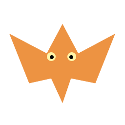

Aracne 120

Scirocco
LE VOL D’ARACNE
Vise la bonne découverte.
La tarentule pose une énigme. Fais rebondir Aracne vers le lieu qui répond à sa question.
Glisse le doigt pour déplacer la plateforme. Ses bords orientent le rebond. Touche le terrain pour lancer.